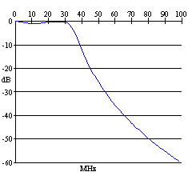

Example: Insertion Loss Example: Insertion Loss
Example: Insertion Loss Example: Insertion LossThis example analyzes a five pole Chebyshew filter. This filter was designed using QuickSmith and is currently being used in a commercial product. This program demonstrates the use of Q values for capacitor and inductors.
Problem: Design a low pass filter with a 28 MHz cut off frequency and atleast 60 dB attenuation at 100 MHz to be used in the output of a 50 ohms system.
Solution: The circuit for this problem is saved in the disk as "example5.sch", it consists of the value of the each network element and its Q. Since the goal of this problem was to determine dissipative characteristics of the network, Q values have to be taken into account to get realistic results. Alternately the user may chose to enter/edit the Q values from the "Assign Values" menu.
We start by opening "example5.sch" from the file menu in the schematic window. The insertion loss in dB can be determined by choosing "Begin Sweep" command from the "Insertion loss" menu. The result of this command is shown in the figure below. Further 50 Ohms match is verified by viewing the schematic menu.
Insertion Loss in dB
